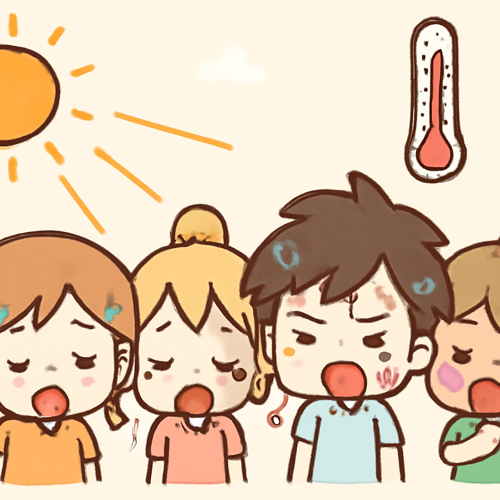

其一 · 俄羅斯 · 波蘭總理警告面對俄威脅的關鍵時刻
波蘭總理提醒俄羅斯可能攻擊的危險
在波蘭華沙，總理杜達克（Donald Tusk）強調，波蘭正面臨關鍵時刻，因為媒體報導俄羅斯可能計劃攻擊。他呼籲國民做好準備，因為這場威脅不僅影響波蘭，也影響整個歐洲。說不定我們的下一個國際新聞就是「波蘭成為最新的流行旅遊地點」！
🔗 原始新聞 ↗
2026-07-04 · 以古觀今，以笑抗愁
波蘭總理提醒俄羅斯可能攻擊的危險
在波蘭華沙，總理杜達克（Donald Tusk）強調，波蘭正面臨關鍵時刻，因為媒體報導俄羅斯可能計劃攻擊。他呼籲國民做好準備，因為這場威脅不僅影響波蘭，也影響整個歐洲。說不定我們的下一個國際新聞就是「波蘭成為最新的流行旅遊地點」！
🔗 原始新聞 ↗
委內瑞拉地震後，家庭在臨時停屍間辨認親人
在委內瑞拉的災區，最近的地震造成了嚴重損失，許多家庭被迫在臨時停屍間辨認遇難者，當地服務已經超負荷運作。這場災難突顯了當地應急管理的脆弱性，許多受災居民仍在努力恢復正常生活。這種情況下，或許我們更應該學會珍惜身邊的人。
🔗 原始新聞 ↗
法國在熱浪中記錄超過兩千人過世，氣候再度警鐘響起

在法國，隨著熱浪的來襲，當地記錄到超過2025人因高溫而過世。氣象專家預測，未來幾天將有更多極端氣候現象發生，讓大家感受到氣候變化的威脅。或許我們應該開始考慮如何與極端天氣共處，或者乾脆去學習如何在高溫中生存。
🔗 原始新聞 ↗
中國回應外界對民族團結法的批評
在北京，中國政府強調其新通過的民族團結法旨在保護少數民族的權益，儘管國際社會對此提出了許多批評聲音。這項法律的影響可能會改變少數民族的生活方式，並引發更廣泛的討論。面對這樣的境況，或許我們更需要關注多元文化的共存之道。
🔗 原始新聞 ↗
伊朗開始為已故最高領導人舉行公開哀悼活動
在伊朗德黑蘭，隨著最高領導人哈梅內伊的葬禮開始，外國貴賓紛紛前來致敬。這一事件不僅對伊朗內部的政治局勢有深遠影響，也可能在國際上引發關注。對於伊朗人來說，這是一個需要哀悼和反思的時刻，未來將有什麼變化，大家都在拭目以待。
🔗 原始新聞 ↗